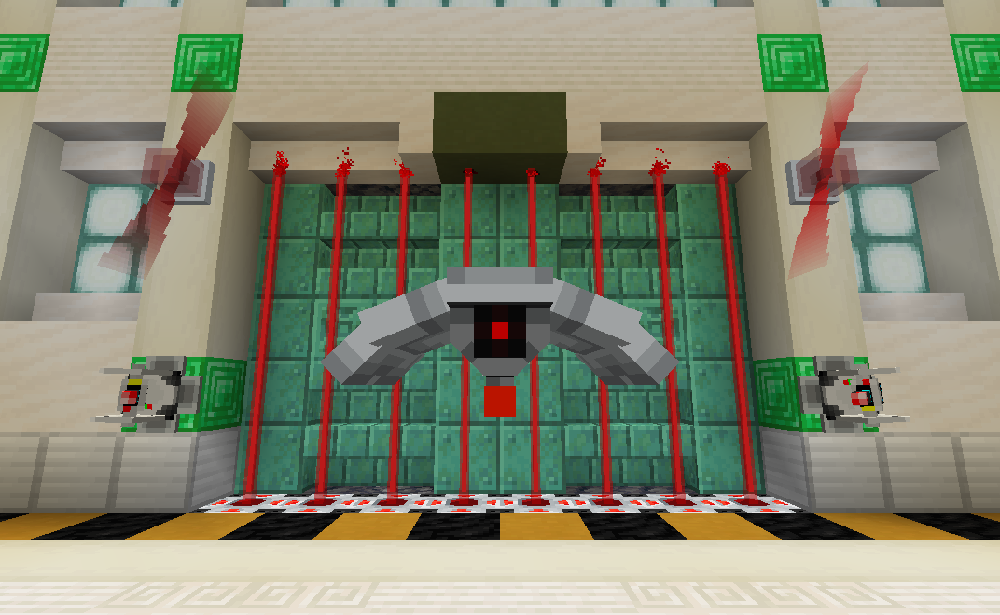

Lockdown Data Pack
From laser turrets to force fields, Lockdown adds security-themed blocks/items to secure your base against intruders!

Version Compatibility
This datapack uses overlays to support multiple versions of the game with a single ZIP file. However, some features will not be backported to older versions. Below is a table showing what features are available for each game version.
| Game Version | Data Pack Version |
|---|---|
| 1.21.5-1.21.10 | R3 |
Old 1.16, 1.17, and 1.20.1 versions are available on the project's GitHub page here